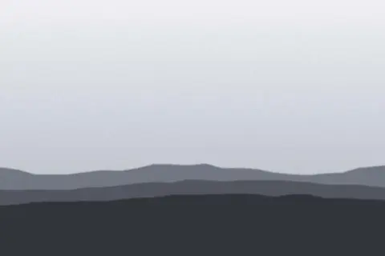
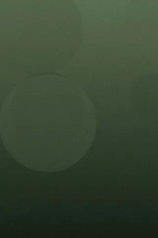
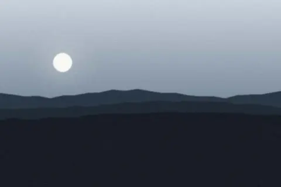
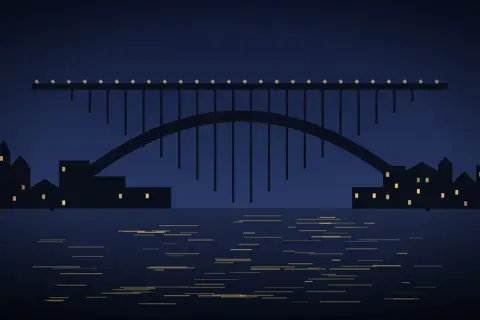
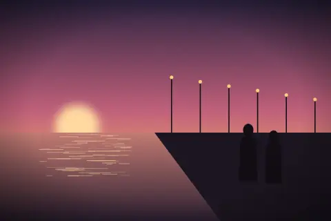
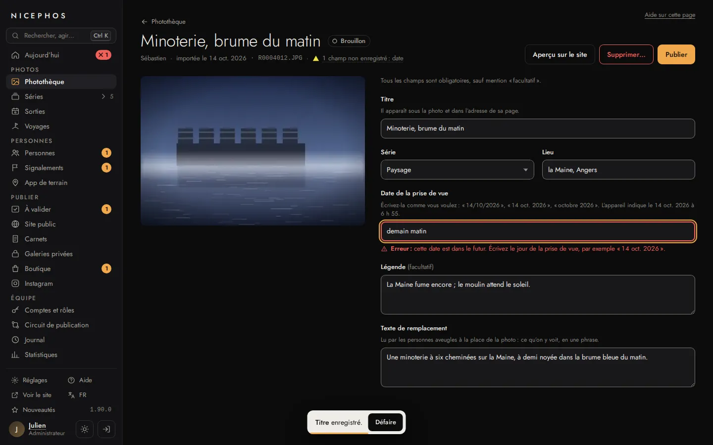
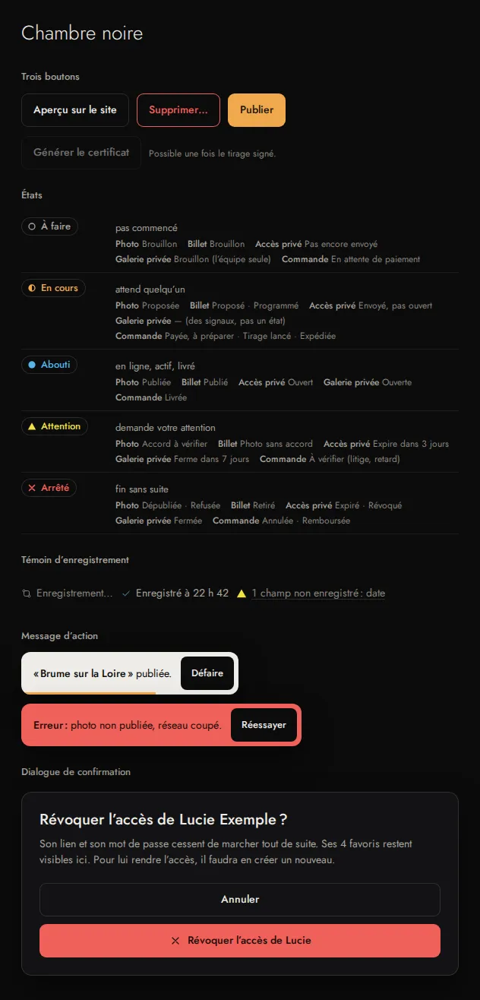
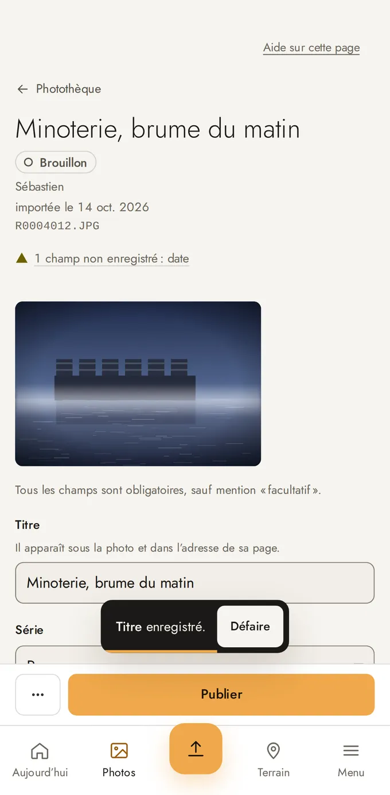
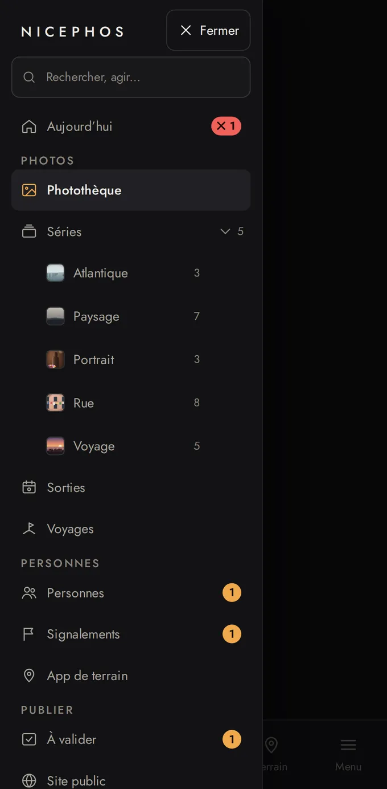

Voyages
Lisbonne et Porto
Deux jours, deux regards, un même océan. Sébastien a cherché la mer, Julien les gens : du premier tram de l’Alfama à la barre de Foz, là où le Douro rencontre l’Atlantique.

MQ-00 · v3 du 19 oct. 2026, sur l’audit d’ergonomie du 16 oct.
La v3 garde les composants, les mots et les règles d’accessibilité de la v2, et change leur dessin : la photo en plein cadre à l’accueil, des titres plus grands, les données en Plex Mono, des boutons sans cadre, le sable pour les étiquettes. La photo d’abord, une seule voix typographique, du silence plutôt que des boîtes. Chaque composant a un nom, une forme et une place : les vingt maquettes les assemblent sans les redessiner.
Même soir
Deux regards sur Lisbonne, le 10 oct. 2026, à 18 h 52 puis à 19 h 05


<details>, bascules dans des formulaires, cibles de 44 px, focus visible, erreurs écrites près du champ.Cinq jeux de couleurs, une même grammaire : un fond, une encre, deux gris de texte, un bord de champ, un accent réservé à l’état actif, une couleur d’erreur, une de réussite. Les valeurs sont lues dans _commun/tokens.css ; chaque contraste est mesuré sur le fond du thème (WCAG 2.2 : 4,5:1 pour un texte, 3:1 pour un bord de composant).
| Jeton | Contraste |
|---|---|
--paper#0b0b0b | fond |
--ink#f0efeb | 17,1:1 AAA |
--prose#cfcdc7 | 12,4:1 AAA |
--mute#a19f99 | 7,4:1 AAA |
--field#6e6c67 | 3,8:1 AA |
--safelight#cbb68b | 9,9:1 AA |
--error#f08c78 | 8,2:1 AAA |
--ok#9fd3a8 | 11,6:1 AAA |
--rule#2c2c2b | filet |
| Jeton | Contraste |
|---|---|
--paper#fbfbf9 | fond |
--ink#111111 | 18,2:1 AAA |
--prose#3a3936 | 11,1:1 AAA |
--mute#5e5d59 | 6,4:1 AA |
--field#8a8985 | 3,4:1 AA |
--safelight#7d6532 | 5,4:1 AA |
--error#a8412b | 5,9:1 AA |
--ok#2f6b3a | 6,2:1 AA |
--rule#dddcd7 | filet |
| Jeton | Contraste |
|---|---|
--paper#f6f4ef | fond |
--ink#1d1c1a | 15,5:1 AAA |
--prose#5f5a52 | 6,2:1 AA |
--mute#6b665d | 5,2:1 AA |
--field#8a847a | 3,4:1 AA |
--safelight#b5523b | 4,5:1 AA |
--error#a12a2a | 6,6:1 AA |
--ok#2f6b3a | 5,8:1 AA |
--rule#dcd7cd | filet |
| Jeton | Contraste |
|---|---|
--bg#0b0b0c | fond |
--s1#121214 | fond |
--ink#eeece7 | 15,8:1 AAA |
--ink2#a9a59c | 7,6:1 AAA |
--ink3#8a857c | 5,1:1 AA |
--field-line#7a766e | 3,9:1 AA |
--accent#f0a94c | 9,2:1 AAA |
--accent-ink#f0a94c | 9,3:1 AAA |
--ok#56b4e9 | 8,1:1 AAA |
--warn#f0e442 | 14,1:1 AAA |
--danger#f0605a | 5,8:1 AA |
| Jeton | Contraste |
|---|---|
--bg#f6f4ef | fond |
--s1#ffffff | fond |
--ink#1b1a17 | 17,4:1 AAA |
--ink2#55514a | 7,9:1 AAA |
--ink3#6b665d | 5,7:1 AA |
--field-line#857f75 | 3,4:1 AA |
--accent#f0a94c | 9,2:1 AAA |
--accent-ink#9a5b0c | 5,4:1 AA |
--ok#0067a3 | 6,1:1 AA |
--warn#6e6000 | 6,3:1 AA |
--danger#b2410a | 5,7:1 AA |
--paper fond · --ink texte, titres, bouton plein · --prose texte long · --mute méta du cartel, aide, pied de page · --field bord des champs, cases et radios (3:1) · --safelight état actif seulement (3:1) · --error erreur · --ok réussite · --rule filet, jamais seul porteur d’information.--bg fond · --s1 panneaux et barre latérale (fond des mesures) · --ink, --ink2, --ink3 trois niveaux de texte · --field-line bord des champs (mesuré sur --s2) · --accent bouton plein et compteurs (mesuré avec son texte --on-accent) · --accent-ink en cours, focus · --ok abouti · --warn attention · --danger arrêté et bouton danger.#f0605a, 2° de teinte), plus sombre que l’ambre du bouton principal (36°) : main écrivait un orangé (#e8743b) qu’on confondait avec lui ; le bouton danger plein porte en plus son icône ✕.#ff2e93), hors de tous les thèmes. Ce qui est magenta n’appartient jamais à l’interface.Jost porte tout le site : le logo, les titres, le texte. Le 300 est réservé aux grands titres ; tout ce qui se lit est en 400, parce que le trait léger « bave » sur le noir. Rien sous 13 px sur le site, rien sous 12 px dans l’admin.
Jetons --esp-demi (4), --esp-1 (8) … --esp-16 (128).
Le demi-pas (4 px) n’aligne qu’une icône sur un texte. Hauteurs : barre de l’en-tête 64 px, puis 72 ; bouton 48 ; cible 44.
| Largeur | Marge | Exemple |
|---|---|---|
| moins de 360 px | 16 px | iPhone SE, zoom 200 % |
| 360 à 767 px | 24 px | Pixel 7 (412 px) |
| 768 à 1 023 px | 40 px | iPad portrait (820 px) |
| 1 024 à 1 279 px | 56 px | iPad paysage, bureau zoomé |
| 1 280 px et plus | 72 px | bureau (1 440 px) |
Site public : angles vifs, partout (--r-site: 0), comme le trait du logo. Administration : 9 px pour les contrôles, 14 px pour les panneaux et le dialogue, pastilles rondes : le dessin d’admin.css ne change pas.
Un seul dessin de focus : un trait de 2 px de la couleur de l’encre, à 3 px du bord (0 px dans un champ, 2 px autour d’une case). Il entoure la vignette entière, image et cartel. Cibles : 24 px au moins à la souris, 44 px au toucher, 48 px pour les boutons.
Trois variantes nommées, une seule structure. Elles ne débordent jamais : la mise en page change avant que le texte allemand, le plus long, ne manque de place. Les en-têtes ci-dessous sont vrais : ils suivent leur propre largeur (requêtes de conteneur), comme ils suivront celle de l’écran ; sans JavaScript.
.sh--prive), « Galerie privée » à gauche et la marque au centre, comme dans la galerie (section 10).Au téléphone, cette planche montre les largeurs de 320 et 412 px ; les largeurs de 768 à 1 440 px se voient sur le rendu du bureau.
views/langs.eta), le dernier outil à droite, suivi seulement de « Menu » (téléphone) ou de « Quitter » (galerie privée), qui ferment la rangée. Le code de la langue, puis la liste « Français · English · Deutsch », chaque nom dans sa langue (lang), la langue choisie en 500 et cochée. Plus de drapeau (UX-F-32).<details class="sh-menu">. Le panneau reprend le même menu, puis Tirages et Rechercher ; l’entrée active est soulignée de sable comme au bureau.Deux variantes, une classe. Le complet range ses liens en deux groupes nommés ; les liens de la boutique (conditions, livraison, renoncer à une commande) y ont leur place fixe. Le réduit sert le tunnel et la galerie privée. Le pied complet de cette page est en bas.
Variante réduite · tunnel, galerie privée
Un seul cartel : le titre, puis « Auteur · Lieu · date ». Il se place sous les horizontales et à côté des verticales en grand format. Les vignettes gardent le format de la photo, en rangées à hauteur commune : ni fond gris, ni cercle, ni recadrage.


Les deux · 22 photos · Sébastien 10 · Julien 12
 Brume sur la LoireSébastien · Anjou · mars 2024
Brume sur la LoireSébastien · Anjou · mars 2024 Quai, 7 h 12Sébastien · Angers · oct. 2024
Quai, 7 h 12Sébastien · Angers · oct. 2024 Ligne d’eauJulien · Finistère · août 2024
Ligne d’eauJulien · Finistère · août 2024 Le ciel s’est ouvertSébastien · Anjou · oct. 2025
Le ciel s’est ouvertSébastien · Anjou · oct. 2025 Passage, fin d’après-midiJulien · Lisbonne · mai 2024
Passage, fin d’après-midiJulien · Lisbonne · mai 2024
Silence blancSébastien · Vercors · févr. 2025
Sous-boisJulien · Chandelais · juin 2025
Le lac ne dit rienSébastien · La Réunion · sept. 2024 Cais do Sodré, marée basseSébastien · Lisbonne · 10 oct. 2026
Cais do Sodré, marée basseSébastien · Lisbonne · 10 oct. 2026 Belém, contre-jourSébastien · Lisbonne · 10 oct. 2026
Belém, contre-jourSébastien · Lisbonne · 10 oct. 2026 Tiago, marché do BolhãoSébastien · Porto · 11 oct. 2026
Tiago, marché do BolhãoSébastien · Porto · 11 oct. 2026 Foz, la barreSébastien · Porto · 11 oct. 2026Alfama, premier tramJulien · Lisbonne · 10 oct. 2026
Foz, la barreSébastien · Porto · 11 oct. 2026Alfama, premier tramJulien · Lisbonne · 10 oct. 2026 Linge au balconJulien · Lisbonne · 10 oct. 2026
Linge au balconJulien · Lisbonne · 10 oct. 2026 Miradouro, l’heure doréeJulien · Lisbonne · 10 oct. 2026
Miradouro, l’heure doréeJulien · Lisbonne · 10 oct. 2026 Inês, rua dos RemédiosJulien · Lisbonne · 10 oct. 2026
Inês, rua dos RemédiosJulien · Lisbonne · 10 oct. 2026 Deux ombresJulien · Paris · déc. 2023
Deux ombresJulien · Paris · déc. 2023 Élise, contre-jourJulien · Nantes · janv. 2025
Élise, contre-jourJulien · Nantes · janv. 2025 Ribeira, brume du fleuveJulien · Porto · 11 oct. 2026
Ribeira, brume du fleuveJulien · Porto · 11 oct. 2026 Escaliers des GuindaisJulien · Porto · 11 oct. 2026
Escaliers des GuindaisJulien · Porto · 11 oct. 2026 Deux, minuitJulien · Nantes · nov. 2023
Deux, minuitJulien · Nantes · nov. 2023
Pont Dom-Luís, le soirJulien · Porto · 11 oct. 2026Proposée
Quai Ligny, soirSébastien · Angers · 14 oct. 2026Brouillon, accord à vérifier Minoterie, brume du matinSébastien · Angers · 14 oct. 2026Brouillon (R0004012.JPG)
Minoterie, brume du matinSébastien · Angers · 14 oct. 2026Brouillon (R0004012.JPG) Réverbères, quai LignySébastien · Angers · 14 oct. 2026Brouillon (R0004057.JPG)
Réverbères, quai LignySébastien · Angers · 14 oct. 2026Brouillon (R0004057.JPG)<li> porte son rapport (style="--r: 1.5"), et une verticale la classe .v (une carrée .c) ; hauteur visée 240 px au bureau, 200 px sur tablette ; au téléphone, 40 % de la largeur de la rangée : deux photos au plus par rangée, garanti par le CSS (une horizontale seule ou avec une verticale, deux verticales ensemble ; la photo qui suit deux verticales ouvre la rangée suivante, public.css § 18). La dernière rangée n’est pas étirée. La rangée est un conteneur : son parent lui donne sa largeur.<picture> (server/images.js, server/picture.js) ; les maquettes n’ont que des WebP de démonstration de 160, 480, 900 et 1 600 px de côté long. Correspondance : 160 et 480 tiennent la place de la variante de 640, 900 celle de 1 280, 1 600 celle de 2 000 ; les variantes de 160 et 480 pour les vignettes sont à créer (UX-T-07). Ce qui passe tel quel dans le code, c’est le sizes, selon le format : horizontale (min-width: 1280px) 470px, (min-width: 768px) 390px, calc(100vw - 48px) · verticale (min-width: 1280px) 210px, (min-width: 768px) 175px, calc(50vw - 28px) (rangée étirée : 330 et 150 px, 210 et 120 px). Au téléphone, la dernière partie dit la place réelle : horizontale seule calc(100vw - 48px), à côté d’une verticale calc(69.2vw - 39px), verticale à côté d’une horizontale calc(30.8vw - 17px), deux verticales calc(50vw - 28px), dernière rangée calc(60vw - 29px) ou calc(26.7vw - 13px) (outil sizes-tel.py). Hors des rangées, la largeur réelle.Trois niveaux. Le bouton plein est l’action principale, et il n’y en a qu’un par écran ; le filet est secondaire ; le lien souligné, tertiaire. Casse de phrase, un verbe et son objet, 48 px de haut.
Une phrase en tête : « Tous les champs sont obligatoires, sauf mention « facultatif » ». Puis, pour chaque champ : le libellé, l’aide, le champ, et l’erreur dessous (sous la légende pour un groupe). Après un envoi incomplet, un résumé en tête reçoit le focus ; la saisie est gardée.
Nuit · après un envoi incomplet (le formulaire des coordonnées de MQ-15)
Jour · en cours de saisie, allemand (le même formulaire)
autofocus sur tabindex="-1"), sans script. Balisage : <section class="resume" tabindex="-1" aria-labelledby="…"> titrée par son <h2> (ici un <h3>, sous le titre de la section) ; jamais un <div> nommé par aria-labelledby, qu’ARIA interdit (le nom n’était pas lu).label, et « Lire les conditions de vente » sort dessous en .choix-sous, reliée à la case par aria-describedby, comme les descriptions à lien de MQ-06.Hors v3 : la boutique viendra plus tard. Ces composants restent ici pour ce jour-là ; aucun écran de la v3 ne montre de prix ni de bouton d’achat.
Vitrine · page d’un tirage
Édition de 15 exemplaires, tous formats confondus : 8 disponibles. Livraison en France : 15 €. TVA non applicable, art. 293 B du CGI.
Panier, commande, facture
TVA non applicable, art. 293 B du CGI.
Étapes du tunnel
Sous 600 px de large, seule l’étape en cours reste, comme ici ; en entier dans l’en-tête Tunnel à 1 280 px, plus haut.
Messages
Ajouté au panier. Miradouro, l’heure dorée, grand format. Voir le panier (2)
Erreur : un autre acheteur vient de réserver un exemplaire de cette photo ; il en reste 7. Votre panier est à jour.
Le numéro de votre exemplaire vous sera donné après le paiement.
Fil d’Ariane
Le fil d’un billet (MQ-12) ; celui d’une série : « Séries / Rue » (MQ-03). Chaque lien fait 44 × 44 px au moins.
.msg p, d’après MQ-05 et MQ-06).Ce que les maquettes du site ont ajouté, versé dans _commun/public.css (§ 15 à 26) et harmonisé : un composant par besoin, un nom, des mesures. Une maquette ne garde dans son <style> que sa propre mise en page. Ci-dessous, les vrais composants, à l’échelle ; la maquette qui les montre en situation est citée à chaque fois.
Choisissez un regard, ou gardez les deux.
Liste compacte · les tirages d’un billet
« Tirage : à partir de 180 € » partout (vitrine, visionneuse, billet) ; jamais « dès ».
--serre : le compte collé au titre).--deux sur deux colonnes, --compacte à 44 px, nom et précision sur une ligne.Filtres cumulés
?regard=julien, ?serie=rue, ?rubrique=voyages, ?vue=favoris), à partager ; l’entrée active comme dans le menu (500, soulignée de sable) ; le nombre en face, pour ne jamais tomber sur une liste vide.scroll-padding-top) : un élément qui reçoit le focus au clavier ne passe jamais dessous (WCAG 2.4.11, contrôle outils/focus-colle.mjs). .filtres-defile : au téléphone, les séries défilent sur une ligne de choix de même largeur, calculée pour que le dernier visible soit toujours coupé à moitié au bord (2,5 choix visibles sous 480 px, 3,5 au-delà) : la suite se voit à toutes les largeurs.<details> au même dessin que la liste des langues (coche sable). .actifs : une étiquette ✕ par filtre, seulement quand il y en a plusieurs.Une rangée étirée : « À proximité », triée par distance
Le diptyque à la place de sa première photo
public.css § 18), et non plus par l’ordre : chaque verticale porte .v (une carrée .c) ; la photo qui suit deux verticales ouvre la rangée suivante. La série Portrait (Tiago · Inês · Élise) se compose Tiago · Inês, puis Élise (contrôle outils/p4-portrait.mjs).--frame) et le cartel sont là avant l’image ; rien ne bouge à son arrivée.<picture media>) ; au-delà, des bandes noires plutôt qu’un recadrage plus fort. Un point focal par photo (--focal). Décision du 19 oct. 2026, contraire à la lettre d’UX-F-17 (v3.css § 6)..js-seul).
Téléchargement non inclus : demandez le fichier à Julien avec votre sélection.
/photo/<slug>, avec ou sans ?carnet=lisbonne-et-porto, s’ouvre toujours dans la visionneuse entière (.vis-…, MQ-04) : la photo à la hauteur de l’écran, les flèches dans les marges dès 1 200 px, le cartel standard « Julien · Lisbonne · 10 oct. 2026 » à gauche, « Tirage : à partir de 180 € » en bouton plein, la légende et les données (.def) dessous, le plein écran (.vis-plein). Depuis un billet, seuls changent le retour de l’en-tête (« ← Lisbonne et Porto ») et l’ordre des voisines (celui du billet) : c’est l’état 16 de MQ-12./prive/7Hk2Qp9xLm4R/photo/4, MQ-17) : précédente · position · suivante, la photo, le cartel de la galerie privée (celui des vignettes, ci-dessus), l’étoile et ce que permettent les droits. Le cartel du récit (lieu précis et heure) reste dans le billet.Voyages
Deux jours, deux regards, un même océan. Sébastien a cherché la mer, Julien les gens : du premier tram de l’Alfama à la barre de Foz, là où le Douro rencontre l’Atlantique.
/carnet, /carnet/lisbonne-et-porto, /carnet/flux.xml ; slug français dans toutes les langues (/de/carnet/lisbonne-et-porto), comme le reste du site (étude, B1 : l’adresse /carnet ; B73 : le slug français dans toutes les langues). Le menu dit « Carnets ».--cote : une couverture verticale à côté du texte, jamais seule en haut d’une colonne avec un vide à sa droite (liste des carnets, accueil) ; dans une liste, le titre garde la taille des autres (titre 2) et le texte se cale en bas de la photo ; au téléphone, la photo prend 5/12 de la largeur, la rubrique et le titre à sa droite, le chapô et la méta dessous. .billet : 12 colonnes au-delà de 1 024 px, texte en 4 à 9, photos en taille normale, .f-large, .f-ecran ou .f-cote ; imprimé noir sur blanc, chaque cartel suivi de son adresse en 10 pt (rien sous 13 px, même sur papier).«Fotografe à vontade. As flores não fogem, e eu também não.»
« Photographiez tant que vous voulez. Les fleurs ne s’en vont pas, et moi non plus. »
Ailleurs dans le carnet : les billets voisins (.voisins, « ← Billet précédent · Billet suivant → », MQ-12), l’abonnement au flux RSS (.abo, MQ-11 et MQ-12) et la pagination (.pages, au-delà de 12 billets, MQ-11).
<details> à l’allure de lien (« Ajouter un message », « Lire la suite », « Livrer dans un autre pays », « Adresse de facturation différente »). .sous-choix et .revele : des cases rattachées à un choix, un champ révélé par :has() (toujours visible sans prise en charge). .choix-sous : la description d’un choix posée hors de son <label> quand elle porte un lien (un lien dans un label rend le nom du bouton interminable et le clic ambigu), reliée au bouton par aria-describedby : « Lire les conditions de vente », sous la case du tunnel (§ 9) ; les objets de la demande de licence (MQ-06).
Miradouro, l’heure doréeJulien · Lisbonne · 10 oct. 2026
Choisir une autre photo.sh--prive, sans langue ni retour : « Galerie privée » à gauche, comme dans la galerie, la marque en texte au centre (passe 4) ; .acces en deux temps (ce qui vous attend · le mot de passe), .secours si on l’a perdu. Adresses : /g/<jeton>, puis /prive/7Hk2Qp9xLm4R..sh--prive .sh-retour-t, d’après MQ-17) : « ← Galerie » sous 560 px, le titre de la galerie au-delà, sur deux lignes s’il le faut. La visionneuse compacte a pour adresse /prive/:id/photo/:n, la photo par sa place dans la galerie. .selection : une seule action principale. .telecharger et .dl-une : tout, ou une photo, avec son poids en Plex Mono.Cais do Sodré, marée basseSébastien · Lisbonne · 10 oct. 2026Miradouro, l’heure doréeJulien · Lisbonne · 10 oct. 20264 favoris dans votre sélection
Une archive ZIP de 2,6 Mo : les 2 photos en JPEG de 2 048 px, pour votre usage personnel.
L’aperçu d’impression de la confirmation (.feuille, noir sur blanc, à l’échelle 1) et la liste des commandes payées (.commandes) sont dans MQ-15.
.suit-format et :has()) : au petit format, la scène se réduit au pan de mur de la console (120 × 80 cm, les trois quarts de la largeur), au grand, 160 × 95 cm ; même échelle dans les deux, le tirage grandit, le vide ne grandit pas. .signature : la signature d’écran sur la photo. .rangees--par-deux : une rangée étirée de quatre horizontales passe à deux par rangée sur tablette (« Les autres tirages de… »).Total 500,00 €2 commandes, livraison comprise
Commander les 2 tiragesCommande 1 sur 2
Julien · Grand format · image 40 × 60 cm, feuille 50 × 70
Exemplaire numéroté sur 15 ; son numéro vous est donné après le paiement.
290,00 €
Paiement 1 sur 2305,00 € à Julien Exemple · « Escaliers des Guindais »
Vous serez redirigé vers la page sécurisée de notre prestataire de paiement ; vos données bancaires ne passent pas par ce site.
Puis vous reviendrez ici pour le second paiement, 195,00 € à Sébastien. Vos deux exemplaires vous sont réservés pendant 35 minutes dès ce clic.
style="--r: 0.6667" sur la ligne). .feuille : l’aperçu d’impression, à l’échelle 1 (794 px pour une page A4, 11 pt = 14,7 px, les mentions en 10 pt = 13,3 px) ; .f-date se colle au titre (MQ-12, MQ-15).Le matin, les quais, les fleuves, au grand angle.
La rue, les gens, toujours avec leur accord.
Expositions, presse, projets communs : une adresse, lue par Sébastien et Julien.
.les-deux) en prend deux, avec l’écart des colonnes entre ses photos : les trois blocs ont des photos de même hauteur. Chaque photo est une <figure> légendée (titre · date, ou « Même soir » et sa phrase).Un seul kit, celui d’admin.css (main), complété par admin-plus.css en quatorze parties : une barre latérale, un en-tête de page, trois boutons, une pastille d’état, un message d’action, un formulaire, un dialogue, puis les composants que les maquettes MQ-07 à MQ-10 et MQ-18 à MQ-20 avaient ajoutés, un seul par besoin. Une maquette ne garde dans son <style> que sa propre mise en page. Ci-dessous, une vraie fiche de photo en « Chambre noire », à 90 %.

photo.eta n’en a pas) · ouvrir la page
lang="fr") ; les libellés les plus longs tiennent dans la barre de 248 px et dans celle de 220 px de la tablette, où le pied passe à la ligne au lieu de déborder (« Einstellungen », « Hilfe », « DE », mesuré à 820 et 1 024 px) · ouvrir la page<nav> par groupe, nommée par son intitulé. « Aujourd’hui », puis Photos · Personnes · Publier · Équipe (UX-A-11).voyage:ID, et B64, « Dans le carnet » sur la page d’un voyage) ; Signalements dans Personnes ; Carnets (/admin/carnet, étude B1 : le nom interne et l’adresse sont « carnet »), Galeries privées et Boutique dans Publier ; Réglages, Aide, Voir le site et la langue au pied, puis Nouveautés et le numéro de version (package.json, 1.90.0) ; « Traitement : n photos » au-dessus du compte quand des images sont en cours (caché sinon) ; le compte, le thème et la déconnexion tout en bas, comme dans views/admin/layout.eta.#admin-nav : sans script, la barre s’ouvre par .side:target, et « Fermer », un lien vers #contenu, la referme ; le script le remplace par un bouton (aria-expanded). Menu ouvert, le clavier reste dans le panneau : sans script, la page, la barre d’onglets et le reste du <body> sont masqués (visibility: hidden, qui les retire aussi de la tabulation) ; avec le script, ils sont inertes (inert, à créer). Main ne fait encore ni l’un ni l’autre : sans script, son menu du téléphone est hors d’atteinte, et avec, la tabulation passe sous le panneau (mq2-correctifs-main.md § 8).navSeries, server/routes/admin.js) : toutes les photos de la série, quel que soit leur statut ; pour un photographe, ses seules photos. Toute photo a une série dès l’import (category_id NOT NULL, 001_init.sql) : « pas encore rangée » veut dire série non vérifiée, jamais sans série. Le 16 oct., toute la journée : Julien (administrateur) Atlantique 3 · Paysage 7 · Portrait 3 · Rue 8 · Voyage 5 ; Sébastien Atlantique 3 · Paysage 5 · Portrait 1 · Rue 2 · Voyage 2. Le site public, lui, ne compte que les publiées (3 · 5 · 3 · 7 · 4).server/permissions.js), sans groupe vide et sans lien vers une page qu’il ne peut pas ouvrir : « Séries » n’est pas un lien (il n’a pas series.gerer, /admin/series lui répondrait 403) mais un intitulé qui déplie ses séries (.ser-titre), dont chaque entrée mène à la Photothèque filtrée ; ni Signalements, ni Instagram, ni Réglages. Publier propose « Mes propositions », puis Carnets, Galeries privées et Boutique, modules à venir dont les permissions sont à créer (carnet.ecrire, galeries.gerer, boutique.voir, portée « les miennes ») ; Équipe garde ses Statistiques (figure plus bas).


| Besoin | Composant (admin-plus.css) | Maquettes |
|---|---|---|
| Lister des objets | .liste-a : un tableau, en cartes sous 1 100 px ; au-dessus .filtres-l et ses filtres d’état, le symbole dans sa couleur (.chip .chip-st), dessous .pied-liste et la légende des états (symbole en couleur, mot en gris) ; un point d’attention sous l’objet d’une ligne (.att). Un lot (.lot de main) : l’erreur d’une ligne sur toute la largeur, dans une ligne à elle (tr.err-ligne) | MQ-08, MQ-18, MQ-19 |
| Un objet, sa vignette, son état | .objets-a (phrase, erreur et issues sous le titre) ; pastilles d’une galerie : .vignettes-a, sous leur intitulé et leur lien (.galerie-resume) ; favoris d’une invitée (.favoris-a) ; chiffres d’un objet (.chiffres) | MQ-18, MQ-20 |
| Suivre une commande | .etapes-a (✓ fait, une seule étape « Maintenant », ○ ensuite) · .lignes-a et .total-a · .registre (15 cases) · .kv-a · .chrono | MQ-19, MQ-18 |
| Choisir | .choix-a : cases et boutons radio avec leur explication, 32 et 44 px ; .choix-a--ligne côte à côte ; aussi dans un dialogue. Case d’une ligne de tableau : .chk-l, son libellé fait la cible | MQ-07 à MQ-09, MQ-18 à MQ-20 |
| Saisir, relire, compter | .lu (une date, une ville relue) · choix rapides d’une date, des boutons d’envoi (.pills dans un champ) · .compteur et .avert (▲ sans erreur) · .err sous un champ et hors d’un champ (groupe, dialogue, photo, fichier) · .fichier-w (choix de fichier refusé) | toutes |
| Finir un formulaire | .form-pied : « Modifié, pas encore en ligne » (.mod) à gauche, puis [Revenir à la version enregistrée] quand une version est déjà en ligne (Mentions légales), ou [Annuler] pour une création, puis l’action pleine | MQ-07, MQ-18 à MQ-20 |
| Prévenir sans bloquer | .signal (▲, une phrase, deux issues) · .note-a (une note grise : ce que fait un bouton, ce que permet un rôle) · .att dans une ligne | MQ-08, MQ-18, MQ-19 |
| Montrer un secret une fois | .secret en Plex Mono, avec « Copier » | MQ-18 |
| Montrer un e-mail | .courriel : en-têtes, texte seul, lien personnel masqué | MQ-18, MQ-19 |
| L’aide des assistants | .sugg : la pastille « ✦ Suggestion : Rue · Accepter », qu’un clic accepte ; son nom est son texte visible (« Suggestion : Rue, Accepter »), sans aria-label · .sugg-bloc : une description ou une traduction, toujours à relire | MQ-08, MQ-09, MQ-20 |
| Régler | .onglets (des liens, aria-current ; 44 px de large au moins, compteur .n ; au téléphone, la rangée passe à la ligne) et .sur-onglet (ce que contient l’onglet) · légende dans son panneau (fieldset.panel.titre-dedans) · .inter (role="switch", le mot à côté ; les deux mots écrits, .inter-oui, .inter-non, et la phrase d’état qui suit la case, .si-coche, .si-decoche : sans script, par :has()) · .assist (titre et interrupteur, effet, état ; jargon replié dans .assist-serveur) · .plier (la ligne dit le contenu) | MQ-07, MQ-18 à MQ-20 |
| Écrire un billet | .editeur-grille, .edit-langues, .barre-outils (de vrais boutons), .source, .sous-source · .apercu-site (jetons du site) et une photo ouverte dans l’aperçu (.vis-b) · onglets de langue sur deux lignes sous 420 px · .bar.jauge (la barre de progression d’admin.css) | MQ-20 |
| Marcher sans script | .js-seul (Ctrl K, Copier, la barre de mise en forme : cachés sans la classe js) · .sans-script (le bouton « Enregistrer » des formulaires à enregistrement automatique) · formulaire sans place, cible d’un bouton form="…" (.form-cache) · résumé d’erreurs titré au niveau 2, ou 3 dans un état montré | toutes |
| Montrer un autre état (maquette) | la zone .mq-etats d’annotations.css ; un cadre <section class="mq-ecran" aria-labelledby> par état, nommé par son étiquette ; .ecran-a sous la coquille ; .voile-a (dialogue ouvert) ; .toast-ech (message statique) ; .ecran-a .bulk (la barre « Pour les cochées » dans un cadre) ; la pastille de la barre d’actions fixe, dans sa marge | toutes |
![Les composants communs ajoutés à admin-plus.css, en thème clair : la barre latérale du rôle Photographe (« Séries » qui se déplie sans être un lien, Nouveautés 1.90.0, « Traitement : 2 photos ») ; les onglets des Réglages et une carte d’assistant avec son interrupteur ; des choix expliqués, une date relue en toutes lettres, un compteur de signes dépassé, un logo refusé, un pied de formulaire ; un dialogue montré ouvert avec son erreur et son bouton danger marqué ✕ ; la pastille « ✦ Suggestion : Rue » et une suggestion longue ; un signalement, une note, un mot de passe affiché une fois ; une liste de commandes et sa légende ; une photo de billet avec son erreur, les étapes d’une commande, le registre d’une édition ; une chronologie, des paires, une jauge, des réglages repliés et un message d’action. Dessous, ce que la passe 3 a versé depuis les maquettes : des onglets avec leur compteur et la ligne « Sur cet onglet », des choix rapides de date en boutons d’envoi, un résumé d’erreurs titré au niveau 3, une légende posée dans son panneau, l’erreur d’un lot sur toute la largeur de la ligne, les chiffres d’un accès, les favoris d’une invitée, les photos d’une galerie et une photo de billet ouverte dans l’aperçu. Tout en bas, ce qui a été versé avant le jury final : les filtres d’état de la Photothèque, chaque symbole dans sa couleur, « Brouillons 3 » courant ; deux cartes d’assistant, l’interrupteur sur « Éteint », puis coché sur « Allumé » avec la phrase « S’allumera à l’enregistrement ».](MQ-00-echantillons/admin-composants-suite.webp)
admin-plus.css, une seule barre latérale d’un seul générateur, titre de page de main (passe 3) ; menu du téléphone sans script, pied de la barre de 220 px qui passe à la ligne, modèle des séries du code, « Texte de remplacement » à créer (jury v2, passe 4) ; filtre d’état à symbole coloré et interrupteur à deux mots, versés depuis les maquettes avant le jury final ; thème gardé à la tablette, clavier gardé dans le menu ouvert, fiche de référence aux noms de photo.eta avec son jeton, « Publier » en formulaire et « Supprimer… » en lien, barre de progression native, ligne « Galerie privée » des états (jury final, passe 5). Le détail technique est en tête d’admin-plus.css.[aria-invalid="true"] { box-shadow … !important }) : le champ vers lequel le résumé envoie n’avait plus de focus visible. Correctif à reporter dans public/admin/admin.css.<section class="resume-a" tabindex="-1" aria-labelledby="…"> et son <h2> ; focus posé dessus ; liens de 24 px (44 au toucher) vers les champs.Tout ce qui est magenta appartient à la maquette, jamais à l’interface. Pastilles, étiquettes d’état et repère du premier écran sont hors du flux : les retirer ne déplace aucun pixel.
Pastille, en marge
Carrée, magenta, cerclée de noir, aria-hidden="true" ; premier enfant de l’élément commenté, elle glisse dans la marge. Jamais hors de l’écran, jamais sur une photo, jamais sur un texte.
Autre état d’un écran
État · Panier vide, après « Retirer » : la page le dit, et propose les tirages
Votre panier est vide. Voir les tirages
Un contour pointillé, une étiquette « État · … » au-dessus, sur deux lignes s’il le faut (jamais coupée) ; la pastille de l’état va dans son étiquette ; le cadre est inert.
Bas du premier écran
Un trait magenta de 16 px dans chaque marge, à 900 px au bureau et 839 px sur Pixel 7 : il ne recouvre aucun texte. (Il est en place en haut de cette page.)
.mq-etat > .mq-pin) ou dans la gouttière intérieure du bloc (.mq-pin.g) ; sous 360 px, elle fait 14 px pour tenir dans la marge de 16 px. Dans un <details>, elle vient après le <summary> ; dans une <figure>, jamais entre l’image et sa légende..mq-etats), puis l’encart « Ce qui change », toujours en dernier. Chaque cadre d’état est inert (<section class="mq-ecran" inert aria-labelledby="…">) ; un cadre qui touche les bords prend .mq-ecran--plein (son contour passe au-dessus de l’en-tête et de la barre de filtres collante qu’il contient) ; un cadre « page entière » posé dans la marge du site, .e-plein (à 10 px des bords de l’écran, en-tête compris).<form> ; sinon le navigateur les lie à ceux de l’écran principal et ne coche qu’un bouton pour toute la page (contrôle : outils/radios-cadres.py).outils/controle-annotations.mjs vérifie tout cela à 1 440, 412 et 320 px (pastilles, étiquettes, inert, ordre, Mesures, interface identique sans annotations) ; outils/insecables.py pose les espaces insécables.Voir sans annotations : ajouter #sans-annotations à l’adresse, ou poser la classe sans-annotations sur <html>, ou imprimer. Le contrôle « interface identique avec et sans pastilles » compare les deux rendus pixel à pixel (bloc Mesures, en bas).
Les mêmes mots partout, et les mêmes données fictives d’une maquette à l’autre, calées sur la démo. Le détail est dans LEXIQUE-ET-DONNEES.md.
| On écrit | Ce que cela désigne | On n’écrit plus |
|---|---|---|
| Tirages | La boutique : menu, pages, pied de page. | |
| Droits et licences | La page des droits et la demande de licence (usage presse, entreprise, hors catalogue). | |
| Les deux · Sébastien · Julien | Le choix du regard, dans cet ordre, partout. | |
| J’aime | Public : un visiteur apprécie une photo (cœur, compteur dès 1). | |
| Favori | Galerie privée : l’invité met une photo dans sa sélection (étoile). | |
| Proposée | Un statut : la photo attend le modérateur. | « ✦ Proposée : Rue » pour un assistant |
| Suggestion | Ce que proposent les assistants d’analyse (« ✦ Suggestion : Rue »). | |
| Annuler | Ne pas faire : fermer un dialogue ou abandonner sans rien changer. | « Annuler » pour revenir sur un geste fait |
| Défaire | Revenir sur un geste fait, dans le message d’action (10 s). | |
| Revenir à la version enregistrée | Abandonner des modifications quand une version existe déjà (Mentions légales) ; « Annuler » reste pour une création et pour un dialogue. | « Annuler » au pied d’un formulaire déjà en ligne |
| prête | Traitement des images fini, et rien d’autre. | « prêtes » pour des suggestions, des accords, une commande |
| 290 € · 290,00 € | Vitrine · panier, commande, facture. | |
| 16 oct. 2026 · 22 h 42 | Dates et heures dans l’interface, cartels et données compris ; « vendredi 16 octobre 2026 » dans une confirmation ou un e-mail, et dans la prose d’un billet. | |
| /serie/rue | Les adresses du code (server/routes/public.js) : / (la Galerie aujourd’hui, filtres ?regard=, ?serie=), /serie/:slug, /photo/:slug, /bonjour, /droits. À créer : /galerie et /series (la démo répond 404), /carnet…, /tirages…, /droits/demande?photo=…, /instagram, /g/… et /prive/…, /commande… (lexique, § 2). | |
| Rechercher | L’outil de recherche de l’en-tête ; en allemand « Suchen », le mot du code (server/i18n.js). | |
| Navigation · Langue | Les noms lus de l’en-tête, ceux du code (server/i18n.js) : « Navigation », le bouton « FR – Langue : français », sa liste « Langue » ; en allemand « Sprache: Deutsch », « Sprache ». | |
| Directeur de la publication | La personne qui répond de ce qui est publié (LCEN, art. 1-1) : mentions légales, réglage legal_director. | |
| « : » « ; » « ! » « ? » | Espace fine insécable devant, et dans les guillemets « » ; insécable avant « · », dans les heures, les dates et devant une unité (outils/insecables.py). | Une ligne qui commence par « : » ou « · » |
| Carnets · billet | La rubrique, et chacun de ses textes. |
| Donnée | Valeur fixée |
|---|---|
| Photos publiées | 22 : Sébastien 10, Julien 12 ; 4 non publiées (1 proposée, 3 brouillons). Numéro d’inventaire stable à la première publication (S25-001 à S26-004, J25-001 à J26-006) ; ordre « choisi par nous » fixé, les trois scènes de nuit et de contre-jour jamais dans la première rangée d’une vue filtrée. |
| Séries | Site public (photos publiées) : Atlantique 3 · Paysage 5 · Portrait 3 · Rue 7 · Voyage 4. Administration (toutes les photos, tous statuts, règle du code ; toute photo a une série, category_id NOT NULL), toute la journée du 16 oct. : Julien 3 · 7 · 3 · 8 · 5 ; Sébastien 3 · 5 · 1 · 2 · 2. |
| Carnets | 4 billets publiés : Lisbonne et Porto (10 photos, deux jours), Inês, ou comment demander une photo, Pourquoi nous ne recadrons pas, Tirer sur Photo Rag ; 1 brouillon. Adresses /carnet/…, slug français dans les trois langues. |
| Tirages | 9 photos en édition de 15 exemplaires ; petit format 180 €, grand format 290 € (« Tirage : à partir de 180 € ») ; livraison 15 € (France), 25 € (UE) ; commande C-2026-0007, facture J-2026-0003, exemplaire 6/15. |
| Journée du 16 oct. | Une seule chronologie, heure par heure (lexique, § 4.9) : commandes du matin, accès de Lucie, sélection envoyée à 15 h 20, travail du soir de 21 h 34 à 22 h 58. |
| Personnes | Inês Exemplo, Tiago Exemplo (photographiés), Claire Exemple (demande /bonjour), Anna Beispiel et Marc Exemple (clients), Lucie Exemple (invitée). |
Les raisons de chaque partie, regroupées ici au lieu d’être répétées sous chacune : ce que le choix donne à la photo, à l’ergonomie, à l’accessibilité et à la sobriété. Le détail des constats est dans le rapport (README.md).
| Partie | La photo | L’ergonomie | L’accessibilité | La sobriété |
|---|---|---|---|---|
| 1 Couleurs | Fonds neutres ; un seul accent, le sable, discret. | Une couleur, un sens : le sable dit « vous êtes ici », le corail « à corriger ». | Textes à 4,5:1, bords de champ à 3:1 ; jamais la couleur seule. | Neuf jetons par thème, mêmes noms : un thème change en une ligne. |
| 2 Typographie | Une famille fine et ronde : la typographie se tait. | Casse normale pour ce qui se lit, même long, même en allemand. | 13 px au moins, 400 sur fond noir, accents dégagés (UX-F-29). | Jost et Plex Mono, 4 fichiers de 10 à 15 ko ; Cormorant en Atelier seulement (UX-F-37). |
| 4 En-têtes | 64 à 72 px, ni fond ni ombre : le premier écran reste à l’image. | Mêmes places : marque, langue en dernier, retour nommé ; « Galerie privée » au même bord. | Rien ne sort à 320 px ni à 200 % (WCAG 1.4.4, 1.4.10) ; noms qui contiennent le texte visible. | Aucun script : deux <details>, un seul gabarit. |
| 5 Pieds de page | Une ligne de marque, sans « reproduction interdite » répété (UX-F-34). | Des liens nommés par ce qu’ils ouvrent ; « Renoncer à une commande » toujours trouvable. | Une liste et un titre par groupe ; 44 px au toucher. | Le même pied partout, deux variantes d’une classe. |
| 6 Cartel, rangées | Le format de chaque prise, le rythme d’une planche contact. | On lit dans le sens des lignes : l’ordre « choisi par nous » se voit (UX-F-13). | Une vignette, un lien, un focus entier, un texte de remplacement. | Le fichier à la taille d’affichage (sizes par format). |
| 7 Boutons, bascules | Un seul aplat clair par écran. | J’aime (cœur) au public, Favori (étoile) à l’invité : deux gestes, deux mots. | <button aria-pressed> ; un bouton indisponible dit pourquoi. | Une bascule, un formulaire POST : elle marche sans script. |
| 8 Formulaires | La photo dont on parle en tête de la demande. | Une règle d’obligation, une place pour l’aide et l’erreur. | Libellés reliés, aria-invalid, résumé focalisé (RGAA 11.10, 11.11). | Validation au serveur ; la saisie revient intacte. |
| 11 Administration | La photo garde la plus grande place de la fiche ; la coquille reste neutre. | Mêmes places d’un écran à l’autre ; une seule règle d’enregistrement (UX-A-06). | États en symbole et mot ; 44 px au toucher ; rien sous 12 px ; menu sans script. | Pas de script de plus ; admin-plus.css remplace 84 ko de styles répétés. |